Executive Summary
Black start capability — the ability to restore power to the grid without any external electricity supply — is one of the most critical yet least discussed functions in modern power system resilience. Traditionally the domain of diesel generators and hydropower plants, this capability is now being rapidly claimed by Battery Energy Storage Systems (BESS).
With sub-second response times, zero fuel dependency, and the advent of grid-forming inverter technology, BESS is redefining how grids recover from blackouts. This article examines the full technical journey of a BESS-driven black start: from detecting a blackout to handing over a stable, synchronized grid.
What Is Black Start?
A black start is the process of restoring an electric power station or part of the electric grid to operation without relying on the external electric power transmission network. The name evokes starting from absolute darkness — no voltage on the lines, no frequency reference, no spinning machines.
The fundamental paradox of power system restoration is what engineers call the "power to make power" problem: large thermal power plants need electricity to restart their pumps, fans, control systems, and turbines — but electricity isn't available because the grid is down. Black start-capable units resolve this by using on-site resources to self-start and then systematically energize larger generation assets.
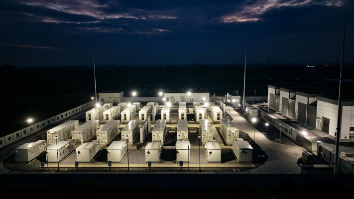
Traditionally, black start was delivered by:
- Diesel generators — fast but costly, emissions-intensive, and fuel-dependent
- Hydropower plants — geographically constrained but electrically clean
- Gas combustion turbines — quick-starting but reliant on continuous fuel supply
Each of these faces increasing headwinds in a decarbonizing energy system. BESS is emerging as the preferred modern alternative.
Why Black Start Matters for Grid Operators
Every grid operator is required to maintain documented restoration plans. In the United States, NERC Standard EOP-005-2 mandates that Transmission Operators verify the Real and Reactive Power capability of their black start resources along defined "cranking paths" — the transmission routes used to energize and restart target generating units. FERC and NERC have jointly confirmed that grid operators need sufficient black start coverage but have flagged the need to diversify beyond single-fuel resources.
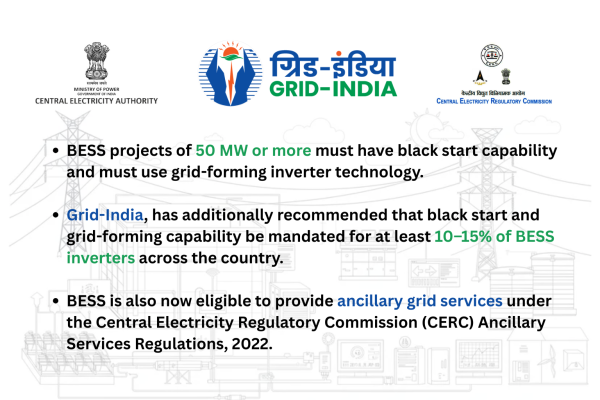
In India, the Central Electricity Authority (CEA) in its 2026 Technical Standards Amendment has now explicitly mandated that all BESS projects of 50 MW or more must have black start capability and must use grid-forming inverter technology. Grid-India, the national transmission utility, has additionally recommended that black start and grid-forming capability be mandated for at least 10–15% of BESS inverters across the country. BESS is also now eligible to provide ancillary grid services under the Central Electricity Regulatory Commission (CERC) Ancillary Services Regulations, 2022.
The Core Technology: Grid-Forming Inverters
The technical foundation of BESS black start is the grid-forming (GFM) inverter. Understanding this requires a brief contrast with the conventional alternative.
Grid-Following vs. Grid-Forming
Most inverters installed in solar and storage systems are grid-following (GFL): they detect an existing grid voltage and frequency and synchronize their output to it. By design, if the grid fails, they shut down immediately to prevent unsafe islanding. This makes them useless for black start.
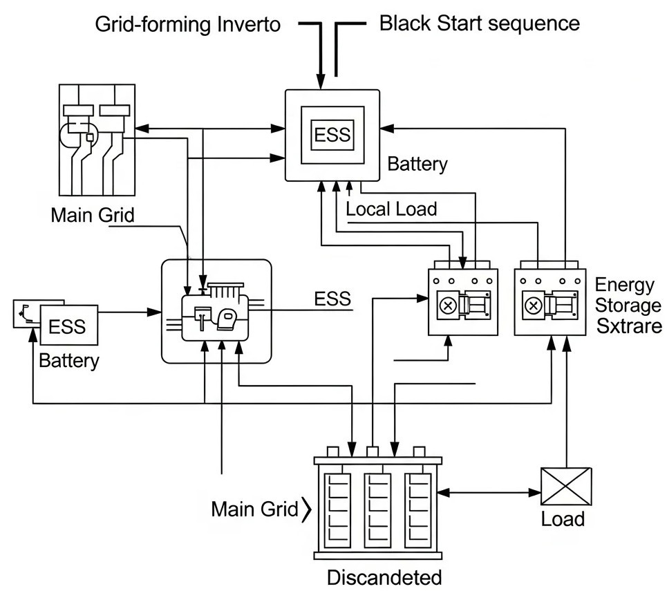
Grid-forming inverters operate entirely differently — they create the grid rather than follow it. A GFM inverter functions as a voltage source, establishing its own stable voltage and frequency signal from scratch. This is the core capability that enables black start. Once the GFM inverter establishes these references, grid-following renewables (solar PV, wind) can detect the stable signal and automatically reconnect and contribute power.
Control Architecture
Inside a GFM inverter, the key power electronics include Insulated-Gate Bipolar Transistors (IGBTs) or Silicon Carbide (SiC) MOSFETs, which switch at high frequencies to synthesize AC waveforms from DC battery power. The control architecture typically includes:
- Droop control loop — generates the voltage and frequency reference, mimicking how synchronous machines naturally share load
- Voltage control loop — regulates the output voltage magnitude
- Current control loop — limits overcurrent during transient events, including transformer energization
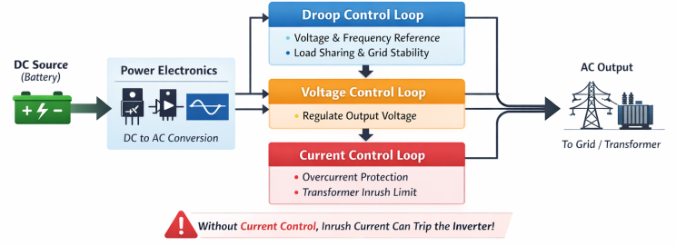
This multi-loop structure is critical: without the current limiter, transformer inrush currents during energization can trip the inverter's overcurrent protection and abort the black start.
The Step-by-Step Black Start Process with BESS
A BESS-based black start follows a carefully sequenced set of steps that can be broadly divided into three phases: self-start, island formation, and grid handoff.
Phase 1: Detection and Self-Start
- Blackout detection — The BESS protection relays and grid monitoring system detect that grid voltage and frequency are out of bounds or zero. The PCS (Power Conversion System) confirms that the grid is absent, distinguishing a true blackout from a momentary fault.
- Auxiliary power boot-up — If the BESS site itself has lost power (common in a total blackout), a small auxiliary backup — typically an External UPS or DC power supply — is used to start control computers, SCADA systems, protection relays, and cooling systems.
- Islanding and mode switch — The BESS automatically disconnects from the dead grid via breakers and the PCS switches from grid-following mode to grid-forming (black start) mode. In this mode, the inverter stops looking for a grid reference and prepares to become the voltage and frequency source.
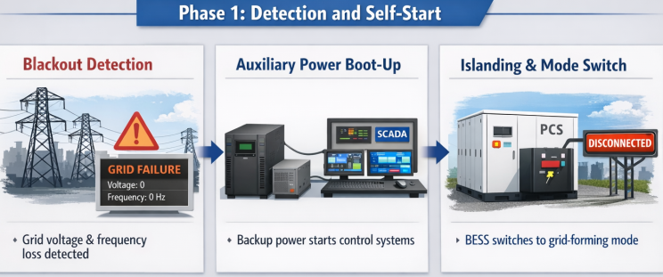
Phase 2: Island Formation and Load Restoration
- Voltage ramp-up (soft start) — The GFM inverter gradually ramps up voltage to the nominal level using a soft-start algorithm. This is a non-negotiable requirement: rapid voltage application causes large magnetizing inrush currents in distribution transformers, which can reach several times the transformer's rated current and trip the inverter's overcurrent protection. Soft start takes several seconds but is essential for success.
- Transformer and switchgear energization — The BESS progressively energizes the MV switchgear and back-feeds power through step-up transformers. Research has demonstrated that a grid-forming battery can successfully blackstart a system where the transformer capacity exceeds the battery's rated power by more than 3:1, using the soft-start technique.
- Power island stabilization — With voltage and frequency now established, the BESS forms a "power island" — a stable, isolated section of the grid. It supplies the station service loads of nearby power plants, enabling their turbines, pumps, and controls to start. Frequency and voltage are continuously regulated by the GFM inverter's droop control.
- Cranking path energization — The BESS energizes the cranking path — the transmission corridor leading to larger generating units that could not start on their own. It supplies real and reactive power along this path to keep voltage and frequency within acceptable limits as motors and loads are switched in.
- Bringing renewables online — Once stable voltage and frequency references are present, grid-following solar PV and wind inverters detect the references and automatically reconnect, injecting real power and reducing the burden on the BESS. A GFM inverter-based BESS has been shown to host up to 10 times its MVA rating in grid-following generation.
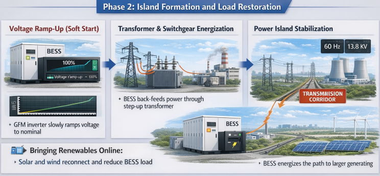
Phase 3: Synchronization and Handoff
- Multi-island synchronization — If multiple BESS units or other black start resources have independently formed separate power islands, these islands must be carefully synchronized and merged by matching voltage magnitude, frequency, and phase angle before closing the interconnecting breaker. Failure to synchronize before closing can cause severe transient currents.
- Load restoration in controlled blocks — Customers and loads are reconnected gradually in small, controlled increments to prevent a sudden load surge that would overwhelm the still-fragile grid and cause frequency collapse.
- Grid handoff — Once the upstream grid or larger synchronous generation comes online and stabilizes, the BESS transitions from grid-forming back to grid-following mode, returning to normal operation — providing frequency response, spinning reserve, or energy arbitrage.
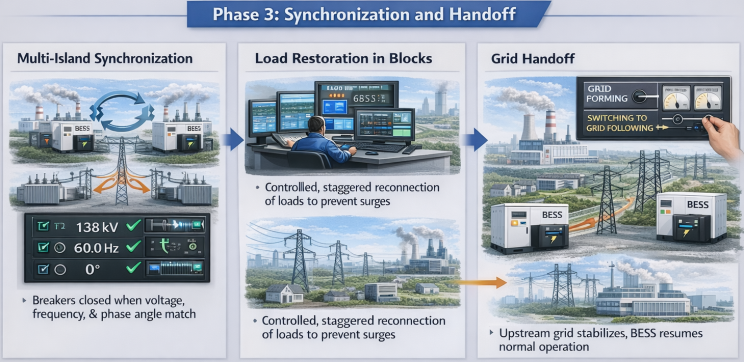
Key Technical Challenges
Despite the advantages of BESS for black start, several technical challenges must be addressed in system design:
Inrush Current Management
Transformer magnetization during energization creates inrush currents that can be several times higher than normal rated currents. Unlike synchronous generators that have high short-circuit current capacity, inverter-based BESS systems have limited overcurrent capability. A BESS with a standard controller cannot perform black start in a real medium-voltage distribution network due to overcurrent trips from transformer inrush. The solution is advanced multi-loop current control with voltage ramping, which has been validated in hardware testing.
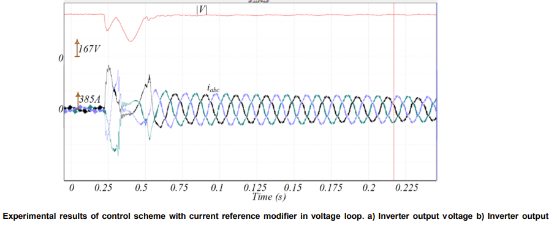
Total Harmonic Distortion (THD)
Hardware testing has shown that during black start, voltage THD from a BESS inverter (approximately 8.3%) is higher than during a diesel generator black start (approximately 6.2%). Current THD is also elevated. This must be managed with output filters and control tuning to ensure power quality within acceptable limits.
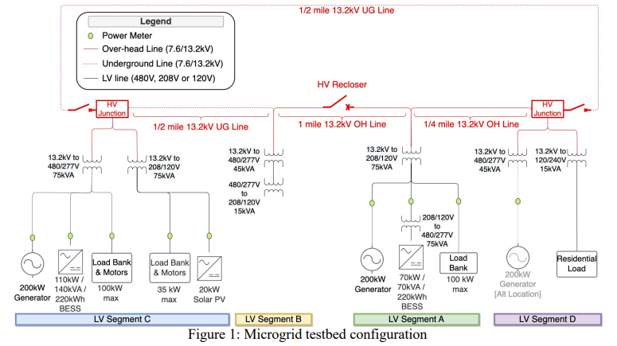
State of Charge (SOC) Management
A BESS must maintain sufficient State of Charge to support an entire black start sequence, which may last from several minutes to several hours depending on the size of the grid section being restored. This requires rigorous SOC management and operational protocols to ensure the battery is never depleted below a minimum threshold during normal operation.
Protection Coordination
Black start operation requires careful coordination of protection schemes. The BESS must distinguish between a grid fault and an actual blackout, and protection relays must be carefully coordinated to handle re-energization of line segments and transformers without false tripping.
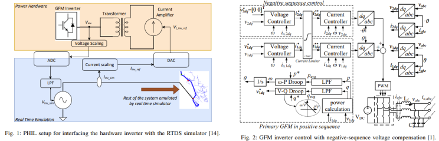
Parallel GFM Operation
When two or more GFM inverters operate in parallel to restore a larger section of the grid, they must maintain droop-based load sharing without oscillating against each other. Research from NREL on parallel GFM inverter-driven black start has demonstrated that both inverters can independently restore backbone sections and then merge at a synchronization switch.
BESS vs. Traditional Black Start Methods
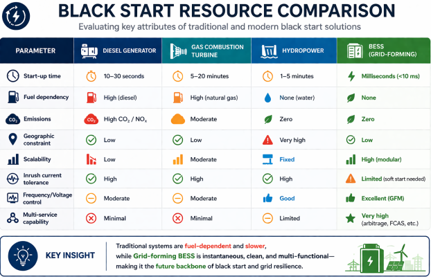
Real-World Deployments
Hornsdale Power Reserve, South Australia
The 150 MW / 194 MWh Hornsdale Power Reserve (now owned by Neoen, supplied by Tesla) is one of the most closely studied utility-scale BESS deployments in the world. While its primary fame is in Frequency Control Ancillary Services (FCAS), the project has expanded to demonstrate inertia services using Tesla's Virtual Machine Mode (VMM) — a grid-forming capability that mimics the behavior of a synchronous generator. The project has paved the way for other BESS projects to pursue grid-forming certifications in Australia.
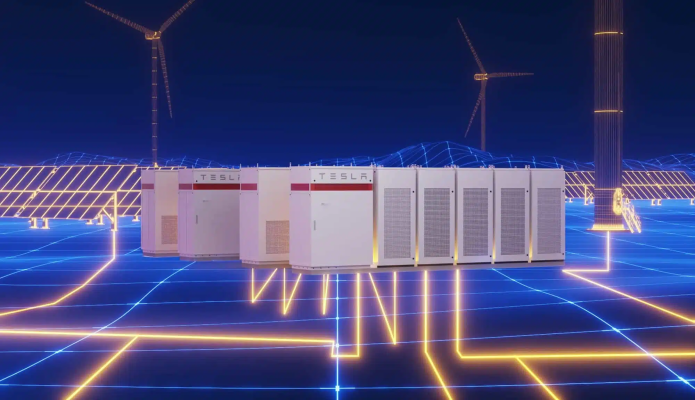
Marsh Landing, California (AES / Fluence)
AES and Fluence deployed a battery storage system at the Marsh Landing Generation Station in California explicitly to provide black start capabilities. The battery is capable of providing electricity to restart one natural gas unit at the plant, with three restart attempts per hour.
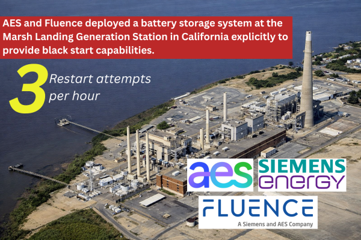
INL Hardware Testing (Idaho National Laboratory)
Hardware-in-the-loop testing by the Idaho National Laboratory validated that a grid-forming BESS paired with grid-following solar PV can provide complete grid restoration services. The tests confirmed that a 110 kW/140 kVA battery could black start a microgrid whose total transformer capacity exceeded the battery's power rating by more than 3:1 — a critical proof of concept for real-world deployments.
Ingå, Finland (Medium-Voltage Distribution Black Start)
A BESS was used to black start a 20 kV distribution system in Ingå, Finland, serving approximately 400 customers and 30 distribution transformers with a combined capacity of 2.5 MVA. The project validated inrush current control strategies in a real medium-voltage network.
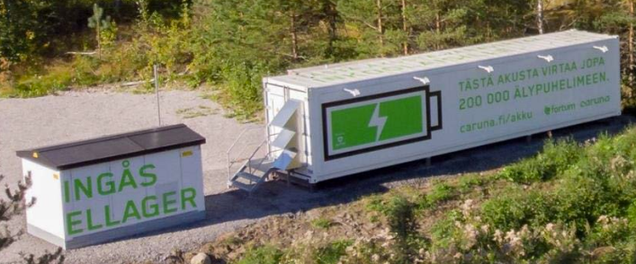
The India Angle: Regulatory Push for BESS Black Start
India's grid restoration challenge is particularly acute because most of the new renewable energy capacity is being built in remote locations — Rajasthan, Gujarat, Tamil Nadu — far from load centers. In the event of a regional blackout, extending supply back to these remote areas could take considerable time using conventional means.
The CEA 2026 Technical Standards Amendment has directly addressed this by mandating black start capability and grid-forming inverters for all large-scale BESS projects (≥ 50 MW). The CEA has estimated India will need approximately 336 GWh of energy storage by 2029–30 and 411 GWh by 2031–32. A meaningful fraction of this fleet will carry black start obligations, fundamentally transforming India's grid restoration architecture.
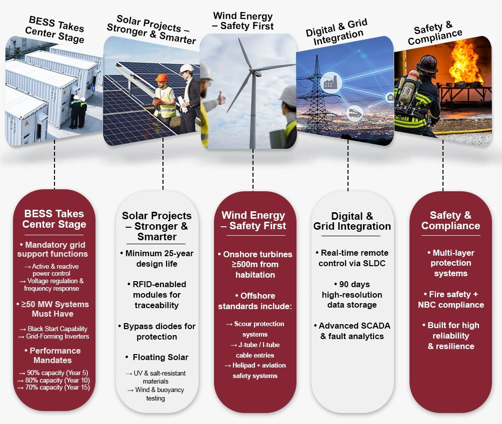
Grid-India's recommendation to mandate grid-forming capability for at least 10–15% of BESS inverters acknowledge both the technical need and the commercial reality — full grid-forming inverters are more expensive than standard grid-following units, so the requirement is calibrated to balance resilience with cost.
Design Considerations for Black Start-Capable BESS
For engineers and developers designing BESS projects with black start obligations, the following are critical design parameters:
- PCS Mode Support: The Power Conversion System must explicitly support grid-forming (V/F control) mode, not just grid-following mode
- Auxiliary Power Source: An independent auxiliary power supply (DC bus or external UPS) must be able to power the BESS control systems and protection relays independently of the main battery or grid
- Soft-Start Algorithm: Voltage ramp-up control is mandatory for transformer energization without tripping on inrush
- Protection Relay Coordination: Relays must be programmed to tolerate re-energization transients and coordinate with upstream protection schemes
- SOC Reservation: A minimum SOC buffer must be contractually and operationally reserved exclusively for black start service
- Communication and SCADA: The system must support remote command from the grid operator's control center for black start initiation
- Performance Benchmarks (India): CEA mandates that BESS must retain ≥ 90% output after 5 years, ≥ 80% after 10 years, and ≥ 70% after 15 years
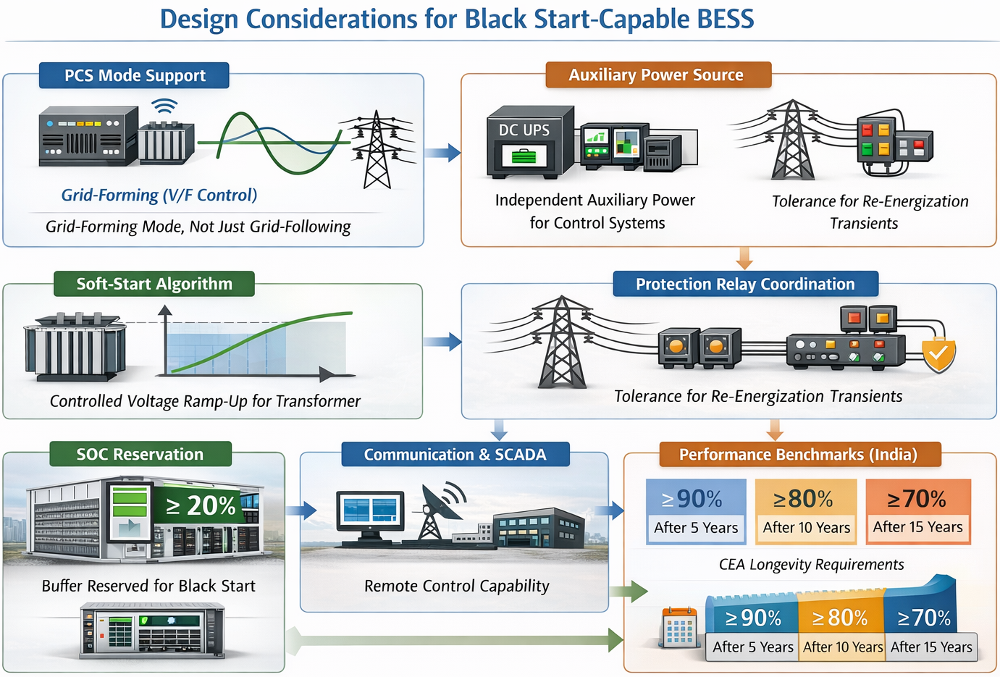
Conclusion
Battery Energy Storage Systems with grid-forming inverters represent the most significant evolution in black start capability since the introduction of combustion turbines. Their millisecond response, zero fuel dependency, modular scalability, and ability to simultaneously provide black start, FCAS, inertia services, and energy arbitrage make them uniquely suited for modern, low-inertia grids with high renewable penetration.

The technical challenges — inrush current management, THD, SOC discipline, and protection coordination — are well-understood and addressable throu
gh advanced inverter controls and rigorous system design. As regulatory frameworks in India (CEA 2026) and globally (NERC EOP-005-2, FERC) solidify the black start obligations of BESS, the market for grid-forming battery systems is set to become a defining segment of the energy storage industry.